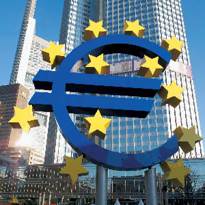

19/03/11 In its 25th anniversary year, the Real Instituto de Estudios Europeos adds working sessions in Frankfurt to its Master's Programme in European Union

In view of the situation of the euro and the changes now under way, as well as the important role of the European Central Bank, the Institute has decided that the intensive sessions of the Professional Master's Programme in European Union, held in Brussels, Strasbourg, Luxembourg and Madrid, will also be extended to Frankfurt. The first to benefit will be the Príncipe Felipe class (2010-2011)Photo: European Central Bank